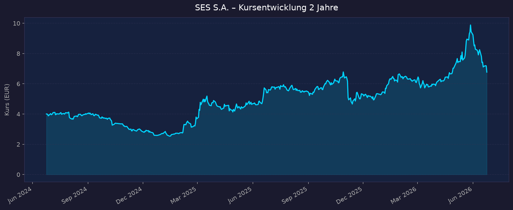
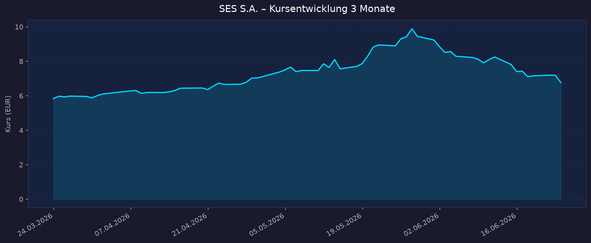

📈 1. Kursentwicklung
Aktueller Kurs: 6,77 EUR | Veränderung (letzter Handelstag): ca. −5,7 % (Vortag 7,18 EUR)
Chart – 2 Jahre

Chart – 3 Monate

| Zeitraum | Kurs Start | Kurs Ende | Veränderung |
|---|---|---|---|
| 2 Jahre | 4,01 EUR | 6,77 EUR | +68,8 % |
| 3 Monate | 5,84 EUR | 6,77 EUR | +15,9 % |
| 52-Wochen-Hoch | — | 9,89 EUR | — |
| 52-Wochen-Tief | — | 4,66 EUR | — |
Einordnung: Starke Erholung über zwei Jahre, aber der Kurs notiert deutlich unter dem 52-Wochen-Hoch von 9,89 EUR. Das Hoch fiel mit der SpaceX-IPO-Euphorie (Mai/Juni 2026) zusammen, die europäische Satellitenwerte beflügelt hat; danach setzte eine Korrektur ein (u. a. New-Street-Downgrade auf „Sell" am 02.06.2026). Hohe Volatilität — die Aktie reagiert stark auf Sektor-Sentiment rund um Starlink/SpaceX und IRIS².
Interaktiver Chart: TradingView EURONEXT:SESG
💹 2. KGV-Entwicklung (Kurs-Gewinn-Verhältnis)
Aktuelles KGV: n/a — Verlust auf Konzernebene durch Intelsat-Integration
| Zeitraum | KGV | Einordnung |
|---|---|---|
| Aktuell (TTM) | n/a (negativ) | Nettoverlust durch Integrations-/Sonderkosten |
| FY 2024 | ca. −2 bis −7 (negativ) | defizitär bzw. von Sonderposten verzerrt |
| FY 2023 | negativ (≈ −34x) | hohe Abschreibungen (u. a. C-Band-USA / mPOWER) |
| FY 2022 | ca. 6,5x | im profitablen Jahr niedrige Bewertung |
| Forward-PE (yfinance) | ca. −46x | spiegelt erwarteten Verlust 2026 wider |
Bewertung: Das klassische KGV ist derzeit nicht aussagekräftig: SES war historisch zwar Dividendenzahler, das Konzernergebnis ist 2025/2026 jedoch durch die Intelsat-Übernahme (17.07.2025), Integrationskosten, hohe Abschreibungen auf die Satellitenflotte und Finanzierungslasten in den Verlust gedreht (Q1 2026 Nettoverlust −16 Mio EUR; bereinigter Nettogewinn aber positiv mit 14 Mio EUR). Für die Bewertung sind P/S, EV/EBITDA und Free Cashflow deutlich relevanter als das KGV. SES bleibt operativ EBITDA-stark und dividendenfähig, das Reingewinn-KGV ist aber bis zur abgeschlossenen Integration unbrauchbar.
💰 3. Sales Multiple (Kurs-Umsatz-Verhältnis / P/S)
Aktuelles P/S-Verhältnis: ca. 1,0 (Marktkap. ~2,8 Mrd EUR / Umsatz TTM ~2,63 Mrd EUR; yfinance: 0,96)
| Zeitraum | P/S Ratio | Einordnung |
|---|---|---|
| Aktuell | ca. 1,0 | sehr niedrig — typisch für kapitalintensiven, verschuldeten Betreiber |
| vor 12 Monaten | grobe Schätzung ca. 0,8–1,2 | mit Kurs schwankend |
| vor 24 Monaten | grobe Schätzung < 1,0 | Tiefkurse 2024 |
| Detaillierte Historie | nicht verfügbar | Macrotrends/MarketScreener blockierten Abruf |
Trend: Stabil-niedrig. Ein P/S um 1,0 ist für einen profitablen, EBITDA-starken Satellitenbetreiber optisch günstig. Wichtig: SES ist hoch verschuldet, daher ist der Enterprise-Value-Multiplikator aussagekräftiger — EV/EBITDA ≈ 7,4 (EV ~8,8 Mrd EUR). Das ist moderat, aber nicht spottbillig, weil die Nettoverschuldung (~5,9 Mrd EUR) den Eigenkapitalwert relativ klein erscheinen lässt.
📊 4. Handelsvolumen (Trading Volume)
| Zeitraum | Ø Tagesvolumen | Auffälligkeiten |
|---|---|---|
| 3-Monats-Durchschnitt | ca. 923.000 Aktien | erhöht ggü. 2-Jahres-Schnitt |
| 2-Jahres-Durchschnitt | ca. 590.000 Aktien | — |
| Volumen-Peak (2J) | exakter Wert nicht verfügbar | Spitzen rund um SpaceX-IPO (Mai/Juni 2026) und FY-2025-Zahlen (02.03.2026) |
Volumentrend: Deutliche Zunahme des Handelsinteresses in den letzten drei Monaten (+~56 % ggü. 2-Jahres-Schnitt). Treiber sind die SpaceX-Börsenphantasie für europäische Sat-Werte, die FY-2025-Zahlen, das EGM (17.06.2026) zur Kapitalherabsetzung sowie die Analysten-Downgrades.
🏦 5. Insider Trades (letzte 2 Jahre)
| Datum | Name | Funktion | Kauf/Verkauf | Anzahl Aktien | Wert |
|---|---|---|---|---|---|
| nicht verfügbar | — | — | — | — | — |
3-Monats-Überblick: nicht verfügbar 2-Jahres-Überblick: nicht verfügbar
Hinweis: SES S.A. ist an der Euronext Paris/Luxemburg notiert (ISIN LU0088087324). Die US-Standardquellen (SEC Form 4 / OpenInsider / Finviz) erfassen nur US-Listings und enthalten keine Insider-Daten für SES. Detaillierte Director-Dealings-Meldungen nach EU-Marktmissbrauchsverordnung (MAR) werden über die SES-IR-Seite und Euronext veröffentlicht, waren aber im Rahmen dieser Recherche nicht strukturiert abrufbar. Unternehmensseitig relevant: laufendes Aktienrückkaufprogramm (seit 02.11.2023) sowie im Juni 2026 ein Rückkauf von bis zu 2.967.519 FDRs (max. ~31,2 Mio EUR) für Mitarbeiterbeteiligungsprogramme; das EGM vom 17.06.2026 beschloss die Einziehung zurückgekaufter Aktien und eine Kapitalherabsetzung — aktionärsfreundliches Signal.
Quelle: SES Investor Relations / Euronext (US-Insider-Quellen nicht anwendbar)
🩳 6. Short-Positionen
Aktuelle Short Quote: nicht verfügbar
| Zeitraum | Short Interest | Veränderung |
|---|---|---|
| Aktuell | nicht verfügbar | — |
| Historie | nicht verfügbar | — |
Einschätzung: Für Euronext-Werte sind belastbare Short-Interest-Quoten öffentlich schwer zugänglich (kein Finviz-Float-Short wie bei US-Aktien; ESMA/AMF veröffentlichen nur Netto-Leerverkaufspositionen einzelner Meldepflichtiger ab 0,5 %). Im Recherchezeitraum lagen keine auffälligen, meldepflichtigen Großshortpositionen vor, die hervorgehoben wurden. Daten als nicht verfügbar gekennzeichnet.
🗞️ 7. Aktuelle Nachrichten
| Datum | Quelle | Nachricht | Relevanz |
|---|---|---|---|
| 17.06.2026 | Business Wire / SES | EGM beschließt Aktien-Einziehung, Kapitalherabsetzung & Governance-Updates | Hoch |
| 03.06.2026 | Barclays | Bestätigt „Hold"-Einstufung für SES | Mittel |
| 02.06.2026 | New Street Research | Downgrade auf „Sell" — Druck auf den Kurs | Hoch |
| Mai/Juni 2026 | Bloomberg / Reuters | SpaceX-IPO (Debüt 12.06.2026, >2 Bio. USD) löst Rally europäischer Sat-Werte aus; SES +3,7 % bei IPO-Filing | Hoch |
| 12.05.2026 | SES / Morningstar | Q1-2026-Zahlen: Umsatz 847 Mio EUR (+66,6 %), Adj. EBITDA 404 Mio EUR; Jahresausblick bestätigt | Hoch |
| 13.05.2026 | SatNews | SES verlängert interne IRIS²-Prüfung — Disziplin bei finanziellen/Performance-KPIs | Hoch |
| 03.2026 | Via Satellite | Zwei weitere O3b-mPOWER-MEO-Satelliten in Betrieb (10 von 13 aktiv) | Mittel |
| 02.03.2026 | SES / Euronext | FY-2025-Zahlen: Umsatz 2,6 Mrd EUR (+34 % ggü. SES-Standalone), Net-Leverage 3,9x | Hoch |
| 2026 | SES | O3b mPOWER für 7 neue Petrobras-FPSOs (Offshore-Konnektivität) | Mittel |
| 2026 | SES / Moody's | Moody's-Rating-Aktion; SES bekräftigt Deleveraging-Ziel ≤ 3,0x | Mittel |
Sentiment: Gemischt bis leicht negativ. Operativ liefert SES robuste, durch Intelsat stark gewachsene Zahlen und bekräftigt den Ausblick; gleichzeitig drücken Analysten-Downgrades (New Street „Sell"), die hohe Verschuldung, die offene IRIS²-Entscheidung und die strukturelle Starlink-Bedrohung. Die SpaceX-IPO wirkt zweischneidig: kurzfristiger Sektor-Rückenwind, langfristig aber verschärfter Wettbewerbsdruck.
📋 8. Letzte 3 Quartalsberichte
Q1 2026 (veröffentlicht 12.05.2026)
| Kennzahl | Ist | Erwartung | Abweichung |
|---|---|---|---|
| Umsatz (Revenue) | 847 Mio EUR (+66,6 % yoy) | k. A. | starkes Wachstum durch Intelsat-Konsolidierung |
| Adj. EBITDA | 404 Mio EUR (+44,2 % yoy) | k. A. | — |
| Nettoergebnis | −16 Mio EUR (Verlust) | k. A. | Integrations-/Finanzierungslasten |
| Adj. Nettogewinn | 14 Mio EUR (−66,5 % yoy) | k. A. | rückläufig trotz Umsatzsprung |
Segmente: Networks 556 Mio EUR (+106 %, u. a. Mobility +207,8 %, inkl. ~81 Mio EUR Aviation-Vertragsrestrukturierung), Media 285 Mio EUR (+42,9 %). Guidance: Jahresausblick 2026 bestätigt — Umsatz und Adj. EBITDA auf Like-for-Like-Basis yoy stabil. Kursreaktion: nicht eindeutig verfügbar (Markt fokussierte rückläufigen bereinigten Gewinn trotz Umsatzsprung).
Q3 / 9M 2025 (veröffentlicht 06.11.2025)
| Kennzahl | Ist (9 Monate) | Erwartung | Abweichung |
|---|---|---|---|
| Umsatz (Revenue) | 1.747 Mio EUR (+19,8 % yoy) | k. A. | erste Teilkonsolidierung Intelsat (ab 17.07.) |
| Adj. EBITDA | 849 Mio EUR (+11,0 % yoy) | k. A. | — |
| Nettomarge | nicht verfügbar | — | — |
| Free Cashflow | nicht verfügbar | — | — |
Segmente: Networks +36,3 % (Aviation, Government), Media +0,7 % (40 % vom Umsatz). Guidance: FY-2025-Umsatz 2,60–2,70 Mrd EUR; Adj. EBITDA 1,17–1,21 Mrd EUR; Capex 0,6–0,7 Mrd EUR. Kursreaktion: nicht verfügbar.
FY 2025 (veröffentlicht 02.03.2026)
| Kennzahl | Ist | Erwartung | Abweichung |
|---|---|---|---|
| Umsatz (Revenue) | ca. 2,6 Mrd EUR (+34 % ggü. SES-Standalone) | innerhalb revidierter Ziele | unter ursprünglichen Erwartungen, aber im revidierten Rahmen |
| Adj. EBITDA | +19 % ggü. SES-Standalone | innerhalb Ziele | — |
| Nettoergebnis | nicht verfügbar (Verlust durch Integration) | — | — |
| Adj. Free Cashflow | 229 Mio EUR | — | Capex 559 Mio EUR |
Bilanz: Combined Like-for-Like Net-Leverage 3,9x (Cash & Äquivalente 674 Mio EUR); Ziel: ≤ 3,0x. Erwartete Synergien aus Intelsat: NPV 2,4 Mrd EUR, Run-Rate ~370 Mio EUR/Jahr (70 % binnen 3 Jahren). Guidance 2026: Umsatz und Adj. EBITDA Like-for-Like stabil; Ziel >1 Mrd EUR Adj. Free Cashflow bis 2027/28 (vor IRIS²). Kursreaktion: nicht eindeutig verfügbar (Markt enttäuscht über „unter ursprünglichen Erwartungen").
🌍 9. Marktkontext & Wettbewerb
Markt / Branche: Satellitenkommunikation (Satcom). Globaler Markt ~34,3 Mrd USD (2026), prognostiziert ~52,5 Mrd USD bis 2031 (CAGR ~8,9 %, Mordor Intelligence). SES ist direkter Pure-Play-Satellitenbetreiber — kein defizitärer Raketen-/Erdbeobachtungs-Newcomer, sondern ein etablierter, EBITDA-starker, dividendenzahlender Infrastrukturkonzern mit GEO-Flotte + MEO-Konstellation O3b mPOWER, durch die Intelsat-Übernahme zum Multi-Orbit-Powerhouse (~90 GEO-, ~30 MEO-Satelliten, LEO-Zugang via OneWeb-Vereinbarung).
| Wettbewerber | Stärke | Schwäche |
|---|---|---|
| Starlink / SpaceX | >9.800 LEO-Sats, dominanter D2C-Massenmarkt, IPO >2 Bio. USD | weniger im souveränen/Enterprise-Premiumgeschäft, Kapitalbedarf |
| Eutelsat + OneWeb | Multi-Orbit (GEO+LEO), EU-Souveränitätsspiel, IRIS²-Partner | hohe Verschuldung, volatil, Kapitalbedarf für LEO |
| Viasat (+ Inmarsat) | GEO Ka-/L-Band, Mobility/Maritime, Government | Bilanzbelastung, LEO-Aufholbedarf |
| Hughes / EchoStar | Nordamerika, Enterprise-VSAT | regional begrenzt |
| Amazon (Kuiper) | Kapitalstärke, 3.236 LEO-Sats bis 2029 geplant | noch im Aufbau |
Branchentrends:
- Multi-Orbit & LEO-Disruption: Starlink erodiert kommerzielle Preise im Massenmarkt; etablierte Betreiber weichen auf Government/Enterprise/Mobility (Aviation, Maritime) und Souveränitäts-Konnektivität aus — genau SES' Strategie.
- Europäische Souveränität / IRIS²: EU-Flaggschiff IRIS² (~10,6 Mrd EUR, 60 % EU-finanziert, Dienste ab ~2030), Konsortium SpaceRISE unter SES-Führung inkl. Eutelsat. SES prüft die Beteiligung aber diszipliniert (Verlängerung der internen Prüfung, Mai 2026) — Chance und Klumpenrisiko zugleich.
- Konsolidierung: SES+Intelsat, Eutelsat+OneWeb, Viasat+Inmarsat — der Sektor bereinigt sich zu wenigen multi-orbitalen Großanbietern.
- EU-Spektrum-Streit: Kommissionsvorschlag (Mai 2026) zur Aufteilung des 2-GHz-Bands; SpaceX klagt gegen EU-Spektrumregeln. Regulatorik bleibt kursrelevant.
Marktposition: Mit Intelsat führender westlicher GEO/MEO-Multi-Orbit-Betreiber, starke Stellung in Government, Mobility (Aviation/Maritime) und Media-Distribution. Technologisch differenziert über O3b mPOWER (MEO, niedrige Latenz). Gegen Starlink im Massenmarkt unterlegen, aber im souveränen/Enterprise-Segment gut positioniert.
Risiken aus dem Marktumfeld: Starlink-Preisdruck, hohe Verschuldung (Net-Leverage 3,9x, Moody's beobachtet), Capex-Intensität (mPOWER-Restlaunches, mögliches IRIS²-Engagement), Abhängigkeit von EU-Subventions-/Vergabeentscheidungen, FX-Effekte, Ausführungsrisiko der Intelsat-Integration.
🧮 Bewertungs-Score
| Kriterium | Score (1–10) | Begründung |
|---|---|---|
| Bewertung | 7,0 | P/S ~1,0 und EV/EBITDA ~7,4 sind moderat-günstig; KGV n/a wegen Verlust. Optisch billig, aber durch Schulden relativiert. |
| Wachstum & Momentum | 6,0 | Umsatz +67 % (durch Intelsat), aber organisch nur „stabil" laut Guidance; Kursmomentum zuletzt negativ (Downgrades, unter 52W-Hoch). |
| Bilanz & Sicherheit | 4,0 | Net-Leverage 3,9x (Ziel ≤3,0x), 5,9 Mrd EUR Nettoschulden, Moody's-Beobachtung. Hauptschwäche. Kein Verwässerungsdruck (eher Rückkäufe/Einziehung). |
| Qualität & Wettbewerbsposition | 7,0 | EBITDA-stark, etabliert, Multi-Orbit-Marktführer im Westen, starkes Government/Mobility-Standbein; mPOWER als Technologievorsprung. |
| Chancen vs. Risiken | 5,5 | Katalysatoren: Synergien (370 Mio EUR/Jahr), FCF-Ziel >1 Mrd EUR bis 2027/28, IRIS². Risiken: Starlink, Schulden, IRIS²-Klumpenrisiko. |
Gewichteter Gesamtscore: 5,9 / 10 (Gewichtung: Bewertung 25 %, Wachstum 20 %, Bilanz 20 %, Qualität 20 %, Chancen/Risiken 15 %)
5-Jahres-Szenario (Horizont 2031)
| Szenario | Annahmen | Kursziel 2031 | Gesamtrendite ggü. heute (6,77 EUR) inkl. Dividende* |
|---|---|---|---|
| Bär | Starlink drückt Preise weiter, IRIS²-Engagement bindet Kapital ohne Rendite, Deleveraging stockt, Dividende gekürzt | ca. 4,50 EUR | ca. −20 % bis −25 % |
| Base | Intelsat-Synergien greifen, Net-Leverage Richtung 3,0x, stabiler Umsatz, FCF >1 Mrd EUR, Dividende ~0,50 EUR p.a. | ca. 9–10 EUR | ca. +50 % bis +75 % |
| Bull | Synergien übertroffen, IRIS² wird rentabler Anker, Government/Mobility-Boom, Re-Rating auf EV/EBITDA ~9x, Dividendenanhebung | ca. 13–15 EUR | ca. +110 % bis +145 % |
*Dividende: aktuell ~0,50 EUR/A-Aktie p.a. (Rendite ~7 % beim heutigen Kurs); kumuliert über 5 Jahre ~2,50 EUR, sofern gehalten. Annahmen grob; keine Prognosegarantie.
📝 Gesamteinschätzung
Einordnung Weltraum-Sektor: SES ist ein direkter Pure-Play-Satellitenbetreiber, aber — anders als die defizitären, hoch bewerteten Raumfahrt-Newcomer — ein profitabler (auf EBITDA-/bereinigter Basis), dividendenstarker Infrastrukturkonzern mit niedrigem P/S. Der Weltraum-Bezug ist das Kerngeschäft: GEO-Flotte, MEO-Konstellation O3b mPOWER und die Intelsat-Übernahme machen SES zum führenden westlichen Multi-Orbit-Anbieter.
Stärken:
- Günstige Bewertung auf Umsatz-/EV-Basis (P/S ~1,0; EV/EBITDA ~7,4) bei attraktiver Dividendenrendite (~7 %)
- Intelsat-Übernahme schafft Skalierung, Diversifikation und 370 Mio EUR/Jahr Synergiepotenzial
- Starke Stellung in margenstabilen Segmenten (Government, Aviation, Maritime, Media)
- Technologievorsprung MEO (O3b mPOWER, niedrige Latenz); aktionärsfreundliche Aktien-Einziehung/Rückkäufe
Risiken:
- Hohe Verschuldung (Net-Leverage 3,9x, ~5,9 Mrd EUR Nettoschulden, Moody's-Beobachtung) — Hauptbelastung
- Strukturelle Starlink-/LEO-Disruption im kommerziellen Geschäft
- Reingewinn aktuell negativ (Integrationskosten) — KGV nicht nutzbar; Analysten zuletzt skeptisch (New Street „Sell")
- IRIS²-Engagement als potenzielles Kapital-/Klumpenrisiko; Abhängigkeit von EU-Subventions-/Spektrumpolitik
Fazit: SES ist ein etablierter, operativ solider Satellitenbetreiber, der nach der Intelsat-Übernahme optisch günstig bewertet ist und eine hohe Dividende zahlt — aber die hohe Verschuldung und der Starlink-Druck deckeln die Fantasie. Es ist ein Value-/Turnaround-Fall mit Dividende, kein wachstumsstarker Pure-Play: Das Chance-Risiko-Profil hängt entscheidend daran, ob das Deleveraging (≤3,0x) gelingt und die Intelsat-Synergien wie geplant gehoben werden. Gesamtscore 5,9/10 — ausgewogen mit klarem Bilanz-Vorbehalt.
Datenquellen: Yahoo Finance / yfinance · SES Investor Relations & Pressemitteilungen · Business Wire · Morningstar · MarketScreener · SatNews · Via Satellite · Payload Space · Reuters/Bloomberg (via Suche) · Mordor Intelligence · Companies Marketcap · Euronext Datenstand 2026-06-24. Charts lokal aus yfinance (SESG.PA) erzeugt.
Rein informative Auswertung öffentlich zugänglicher Daten. Keine Kauf- oder Verkaufsempfehlung.